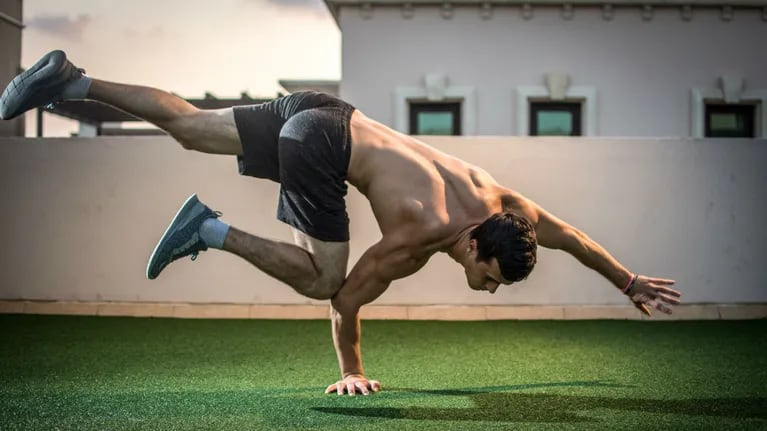

R.MENU
La calistenia va ganando nuevos adeptos cada dia por sus atractivas caracteristicas que difieren de un gimnasio comercial. Uno de los objetivos de la calistenia es ganar masa muscular y mejorar la composicion corporal. Para ese objetivo, ¿funciona mejor la calistenia o el gimnasio? Cada modalidad de entrenamiento tiene unos beneficios y unos inconvenientes. En este articulo detallamos la lista de pros y contras de cada uno, para que seas tu quien elija el que mas le conviene.
La principal diferencia entre ambas disciplinas es que en la calistenia se busca trabajar con el propio peso corporal, y aprender a manejar todos los movimientos que podemos hacer con el. En el gimnasio se utilizan mas cargas externas en forma de peso libre o maquinas guiadas.
El gimnasio es una disciplina mas cerrada y facil de controlar a nivel de planificacion para aumentar la masa muscular. Mover dos kilos mas que la semana pasada o hacer una repeticion mas son parametros faciles de medir para ver que estamos progresando.

Control de las variables de entrenamiento
Las variables de entrenamiento como el volumen, la intensidad, la frecuencia, etc. deben ser manejadas para planificar la progresion que nos lleve al crecimiento muscular. Si no las tenemos en cuenta tambien podemos aumentar nuestra masa muscular, aunque lo haremos de forma mucho mas lenta.
En la calistenia, de forma general, no se controla tan exhaustivamente el numero de repeticiones o series que realizamos. El objetivo en esta disciplina es progresar en la dificultad de los movimientos y ser capaz cada vez de llevar el ejercicio un paso mas alla.
De esta forma podemos progresar de una dominada a un muscle up, o tambien progresar para lograr un dia realizar dominadas a una mano. A este tipo de progresion se le denomina sobrecarga progresiva y consiste en ir un paso mas alla cada vez.
La sobrecarga progresiva en el gimnasio es mucho mas facil de llevar a cabo, ya que anadimos algun kilo al ejercicio o alguna repeticion a la serie. Por lo tanto, en ambas modalidades se busca progresar, pero tendremos un mejor control de las variables del entrenamiento en el gimnasio que en la calistenia.
La hipertrofia muscular puede lograrse por diferentes vias, pero en todas ellas necesitamos contraer el musculo con cierta intensidad y volumen. La calistenia puede conseguir aumentar la masa muscular, y tambien disciplinas como CrossFit.
Sin embargo, el gimnasio es la mejor opcion si nuestro objetivo principal es aumentar la masa muscular. Nos permite entrenar de forma mas precisa para remodelar nuestra silueta. Lo que no debemos olvidar es que la mejor opcion siempre sera aquella que nos guste, y nos atraiga. De nada sirve elegir lo que funciona mejor, si a los pocos dias lo vamos a abandonar.